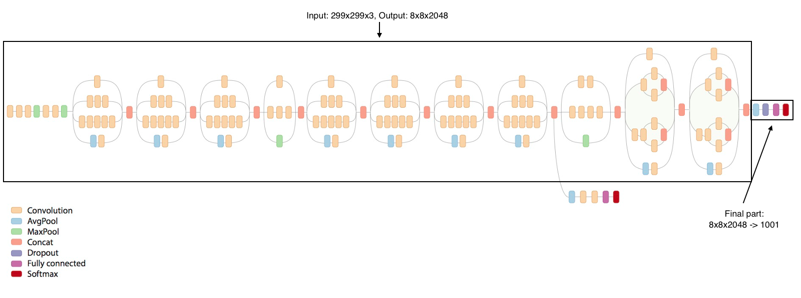

Kaggle, for those uninitiated, is a machine learning competition hosting website, in which companies of all sorts provide a real-world dataset, usually in the form of a training and test set, with the aim to crowd source a solution to a prediction/classification problem. These problems can be anything, natural language processing (detecting duplicate questions), image classification (ImageNet), segmentation (Retina nerve segmentation) or regression (predicting a real-valued output as as opposed to a test label or probability).
My first kaggle competition entry was the Nature conservancy fisheries competition. In this competition, the aim was, from thousands of images of fish obtained from low resolution webcams on trauler boats, predict the species of fish present. This problem interested me unlike many kaggle competitions that had come before it, because I could directly see the scientific utility of monitoring fishing quotas and reducing illegal/accidental overfishing. Additionally, I had become more and more interested in image classification and extracting useful information from images, a data modality that is fairly under-utilised outside of vision research. Coupled with the incredible performance of convolutional neural networks (CNN) for both classification (ImageNet models: Inception, Resnet, DenseNet, etc) and localisation/segmentation (Overfeat, YOLO, R-CNN, etc), I thought this would be a pretty good method to tackle the problem.
I teamed up with Wojtek, as is the nature of kaggle competitions, sharing, making like-minded friends and learning is key to enjoy any of the competitions. By the time we had teamed up, I was in the top 10, he was in the top 20 ( out of ~ 2300 competitors), and we thought our methods would complement each other. We set out the problem in two stages. First, object localisation. The images were mostly boat, with the fish species making up a very small and variable fraction of the total scene from image to image. The first labour intensive task was to obtain bounding boxes for each fish in each image. So I used a python script that allowed me to annotate images and output a JSON with x,y,w,h coordinates for each box:
This way we could feed in the bounding box coordinates and the each corresponding image, to perform a localisation (regression) task with a convolutional neural network. I found and applied Overfeat, a state of the art localisation CNN which can deal with crowded scenes:
Even though it was designed for face detection, with a few modifications, and using resnet pretrained weights, we could obtain pretty accurate bounding boxes of the fish on the test data.
Wojtek, simultaneously trained YOLO, a similar localisation network. We found YOLO outperformed Overfeat for this task and we went forward using the YOLO crops. The next stage involved cropping the images with the predicted fish locations, and feeding them into a classifier. The classifier we chose, and had most success with, was an InceptionV3 CNN architecture, a 48-layer deep CNN with ImageNet pretrained weights.
Transfer learning, instead of initialising to random weights is the practice of using pre-learned weights from a previous classification task for a totally different task. Transfer learning almost always outperforms learning from scratch for smaller datasets, particularly if any of the imagenet class types are present in your data (fish most certainly are!). So this step was essential. Additionally, we used external ImageNet fish images to increase our training set size, this helped improve localisation and potentially, generalisation.
So why bother localising? Couldn’t we have just classified the whole image? Sadly, the images had a number of high variance properties (night/day, colour channel distortions, different boats, variable image size) that would bias the classification. Many of these nuisances could be handled, for example normalising images (1/255) and using the following extensive data augmentation:

However, the main issue with classifying whole images for this task was that the boat the image was taken on was not uniformly distributed across the fish species. Therefore the boat in the image, would be learned as a predictive feature for classifying a species of fish. Clearly, given new test data, a CNN trained like this would fail. We used several InceptionV3 modified architectures and different ways of training them. At first, we simply replaced the last Dense layer (representing 1000 ImageNet categories) to a new dense layer representing our 7 fish species and 1 no fish category:

Wojtek also tried adding additional dense layers and non-linear activation functions coupled with batch normalisation, which further improved our classification accuracy. I on the other hand, tried freezing some of the early layers in the network, whilst fine-tuning the rest. This also improved accuracy, but training time was significantly increased.
We repeated this process for several CNN architectures, including InceptionV4, which was published around the time we were competing, Resnet with 150 layers and VGG16/19. InceptionV3 seemed to outperform all pretrained models we tested. At the time, we were trying to work out, via confusion matrices, which category we were failing on. This ended up being BET (Bigeye tuna) a fish very similar to another class (ALB - Albacore). I also realised that when ever we failed to produce a crop using the localisation CNN, it would be classified as containing no fish! To overcome this, I suggested we ran multiple bags of the localisation network. With different seed initialisations, we would be recovering slightly different bounding boxes per run. Using this technique, we were able to recover bounding boxes for almost all test image fish and this had a large improvement on both our local validation and leaderboard score.
Our final trick was to deal with the non-balanced class distribution. Some fish (ALB) had orders of magnitude more examples than others (LAG - moonfish). A simple technique one can use is over sampling, in which you simply replicate the images of the underrepresented classes, making sure of how you separate them between training/validation splits). This surprisingly simple technique is very effective, and did help with our problem here, but has been shown to work more generally CITE!
Other ideas we explored included using VGG16 as a fully convolutional network and provide the bounding box annotations as auxiliary input. By doing so, VGG16 would both locate the fish, and classify the species. This however did not outperform InceptionV3 although providing the bounding boxes did improve the classification accuracy. This can be thought of almost giving the network a ’clue’ of where it should look in the image. It can be visualised by overlapping a saliency map of the activations onto the original image as done in
Our final submission was an ensemble of several InceptionV3 runs and a resnet run. Whilst there was a large leaderboard shake up due to the boat bias and the general quality of the data, we managed to come 30th/2300 - baggin us a silver medal!
In the next blog, Wojtek will guest post and he will describe another location and classification challenge we participated in, namely the Intel cervical cancer challenge also hosted by Kaggle! *top cartoon fish image shamelessly taken from the kaggle blog first place solution.